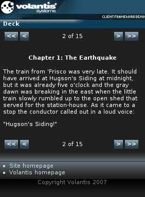

The Deck widget presents data as a series of pages. The content of the widget may be specified directly on an XDIME page, or can be downloaded from an external source using AJAX. Refer to The Deck widget with AJAX for more information.

<widget:deck id="deck" style="mcs-deck-mode:switch">
<widget:deck-page>
<h1>Dorothy and the Wizard in Oz</h1>
<h2>by L. Frank Baum</h2>
</widget:deck-page>
<widget:deck-page>
<h4>Chapter 1: The Earthquake</h4>
<p>The train from 'Frisco was very late. It should have arrived at
Hugson's Siding at midnight, but it was already five
o'clock and the gray dawn was breaking in the east when the little
train slowly rumbled up to the open shed that served for the station-house.
As it came to a stop the conductor called out in a loud voice:</p>
<p>"Hugson's Siding!"</p>
</widget:deck-page>
...
</widget:deck><widget:button action="deck#first-page"><<</widget:button> <widget:button action="deck#previous-page"><</widget:button> <widget:button action="deck#next-page">></widget:button> <widget:button action="deck#last-page">>></widget:button>
<widget:display property="deck#displayed-page-number"/> of <widget:display property="deck#pages-count"/>
<?xml version="1.0" encoding="UTF-8"?>
<html xmlns="http://www.w3.org/2002/06/xhtml2"
xmlns:mcs="http://www.volantis.com/xmlns/2006/01/xdime/mcs"
xmlns:template="http://www.volantis.com/xmlns/marlin-template"
xmlns:widget="http://www.volantis.com/xmlns/2006/05/widget"
xmlns:event="http://www.w3.org/2001/xml-events">
<head>
<title>Deck (switch mode)</title>
<link rel="mcs:theme" href="/themes/main.mthm"/>
<link rel="mcs:layout" href="/layouts/main.mlyt"/>
</head>
<body>
<template:apply href="templates/demo-main.xdtpl">
<template:binding name="title" value="Deck"/>
<template:binding name="content">
<template:complexValue>
<div>
<table style="width:100%">
<tr>
<td style="text-align:left">
<widget:button action="deck#first-page"><<</widget:button>
<widget:button action="deck#previous-page"><</widget:button>
</td>
<td style="text-align:center">
<widget:display property="deck#displayed-page-number"/> of
<widget:display property="deck#pages-count"/>
</td>
<td style="text-align:right">
<widget:button action="deck#next-page">></widget:button>
<widget:button action="deck#last-page">>></widget:button>
</td>
</tr>
</table>
</div>
<widget:deck id="deck" style="mcs-deck-mode:switch">
<widget:deck-page>
<h1 style="text-align:center">Dorothy and the Wizard in Oz</h1>
<h2 style="text-align:center">by L. Frank Baum</h2>
</widget:deck-page>
<widget:deck-page>
<h4 style="text-align:center">Chapter 1: The Earthquake</h4>
<p>The train from 'Frisco was very late. It should have
arrived at Hugson's Siding at midnight, but it was already
five o'clock and the gray dawn was breaking in the east
when the little train slowly rumbled up to the open shed that
served for the station-house. As it came to a stop the conductor
called out in a loud voice:</p>
<p>"Hugson's Siding!"</p>
</widget:deck-page>
<widget:deck-page>
<p>At once a little girl rose from her seat and walked to the door of
the car, carrying a wicker suit-case in one hand and a round
bird-cage covered up with newspapers in the other, while a parasol
was tucked under her arm. The conductor helped her off the car and
then the engineer started his train again, so that it puffed and
groaned and moved slowly away up the track. The reason he was
so late was because all through the night there were times when
the solid earth shook and trembled under him, and the engineer was
afraid that at any moment the rails might spread apart and an
accident happen to his passengers. So he moved the cars slowly
and with caution.</p>
</widget:deck-page>
<widget:deck-page>
<p>The little girl stood still to watch until the train had
disappeared around a curve; then she turned to see where
she was.</p>
<p>The shed at Hugson's Siding was bare save for an old
wooden bench, and did not look very inviting. As she peered
through the soft gray light not a house of any sort was visible near
the station, nor was any person in sight; but after a while the child
discovered a horse and buggy standing near a group of trees
a short distance away. She walked toward it and found the horse
tied to a tree and standing motionless, with its head hanging down
almost to the ground. It was a big horse, tall and bony, with long
legs and large knees and feet. She could count his ribs easily where
they showed through the skin of his body, and his head was long
and seemed altogether too big for him, as if it did not fit. His tail
was short and scraggly, and his harness had been broken in many
places and fastened together again with cords and bits of wire.
The buggy seemed almost new, for it had a shiny top and side
curtains. Getting around in front, so that she could look inside,
the girl saw a boy curled up on the seat, fast asleep.</p>
</widget:deck-page>
<widget:deck-page>
<p>She set down the bird-cage and poked the boy with her parasol.
Presently he woke up, rose to a sitting position and rubbed his
eyes briskly.</p>
<p>"Hello!" he said, seeing her, "are you Dorothy
Gale?"</p>
<p>"Yes," she answered, looking gravely at his tousled
hair and blinking gray eyes. "Have you come to take me to
Hugson's Ranch?"</p>
<p>"Of course," he answered. "Train in?"</p>
<p>"I couldn't be here if it wasn't," she
said.</p>
</widget:deck-page>
<widget:deck-page>
<p>He laughed at that, and his laugh was merry and frank. Jumping
out of the buggy he put Dorothy's suit-case under the seat
and her bird-cage on the floor in front.</p>
<p>"Canary-birds?" he asked.</p>
<p>"Oh no; it's just Eureka, my kitten. I thought that was
the best way to carry her."</p>
<p>The boy nodded.</p>
<p>"Eureka's a funny name for a cat," he remarked.</p>
<p>"I named my kitten that because I found it," she
explained. "Uncle Henry says 'Eureka' means
'I have found it.'"</p>
<p>"All right; hop in."</p>
</widget:deck-page>
<widget:deck-page>
<p>She climbed into the buggy and he followed her. Then the boy
picked up the reins, shook them, and said "Gid-dap!"</p>
<p>The horse did not stir. Dorothy thought he just wiggled one of
his drooping ears, but that was all.</p>
<p>"Gid-dap!" called the boy, again.</p>
<p>The horse stood still.</p>
<p>"Perhaps," said Dorothy, "if you untied him,
he would go."</p>
<p>The boy laughed cheerfully and jumped out.</p>
<p>"Guess I'm half asleep yet," he said, untying the
horse. "But Jim knows his business all right - don't you,
Jim?" patting the long nose of the animal.</p>
</widget:deck-page>
<widget:deck-page>
<p>Then he got into the buggy again and took the reins, and the horse
at once backed away from the tree, turned slowly around, and began
to trot down the sandy road which was just visible in the dim light.</p>
<p>"Thought that train would never come," observed the boy.
"I've waited at that station for five hours."</p>
<p>"We had a lot of earthquakes," said Dorothy.
"Didn't you feel the ground shake?"</p>
<p>"Yes; but we're used to such things in
California," he replied. "They don't scare us
much."</p>
<p>"The conductor said it was the worst quake he ever
knew."</p>
<p>"Did he? Then it must have happened while I was asleep,
he said thoughtfully.</p>
</widget:deck-page>
<widget:deck-page>
<p>"How is Uncle Henry?" she enquired, after a pause
during which the horse continued to trot with long, regular
strides.</p>
<p>"He's pretty well. He and Uncle Hugson have been
having a fine visit."</p>
<p>"Is Mr. Hugson your uncle?" she asked.</p>
<p>"Yes. Uncle Bill Hugson married your Uncle Henry's
wife's sister; so we must be second cousins," said the
boy, in an amused tone. "I work for Uncle Bill on his ranch,
and he pays me six dollars a month and my board."</p>
<p>"Isn't that a great deal?" she asked,
doubtfully.</p>
<p>"Why, it's a great deal for Uncle Hugson, but not for me.
I'm a splendid worker. I work as well as I sleep," he
added, with a laugh.</p>
</widget:deck-page>
<widget:deck-page>
<p>"What is your name?" said Dorothy, thinking she liked the
boy's manner and the cheery tone of his voice.</p>
<p>"Not a very pretty one," he answered, as if a little
ashamed. "My whole name is Zebediah; but folks just call me
'Zeb.' You've been to Australia, haven't
you?"</p>
<p>"Yes; with Uncle Henry," she answered. "We got to
San Francisco a week ago, and Uncle Henry went right on to
Hugson's Ranch for a visit while I stayed a few days in the city
with some friends we had met."</p>
<p>"How long will you be with us?" he asked.</p>
<p>"Only a day. Tomorrow Uncle Henry and I must start back
for Kansas. We've been away for a long time, you know,
and so we're anxious to get home again."</p>
</widget:deck-page>
<widget:deck-page>
<p>The boy flicked the big, boney horse with his whip and looked
thoughtful. Then he started to say something to his little companion,
but before he could speak the buggy began to sway dangerously
from side to side and the earth seemed to rise up before them.
Next minute there was a roar and a sharp crash, and at her side
Dorothy saw the ground open in a wide crack and then come
together again.</p>
<p>"Goodness!" she cried, grasping the iron rail of
the seat. "What was that?"</p>
<p>"That was an awful big quake," replied Zeb,
with a white face. "It almost got us that time,
Dorothy."</p>
</widget:deck-page>
<widget:deck-page>
<p>The horse had stopped short, and stood firm as a rock. Zeb shook
the reins and urged him to go, but Jim was stubborn. Then the boy
cracked his whip and touched the animal's flanks with it, and
after a low moan of protest Jim stepped slowly along the road.</p>
<p>Neither the boy nor the girl spoke again for some minutes. There
was a breath of danger in the very air, and every few moments the
earth would shake violently. Jim's ears were standing erect
upon his head and every muscle of his big body was tense as he
trotted toward home. He was not going very fast, but on his flanks
specks of foam began to appear and at times he would tremble
like a leaf.</p>
</widget:deck-page>
<widget:deck-page>
<p>The sky had grown darker again and the wind made queer
sobbing sounds as it swept over the valley.</p>
<p>Suddenly there was a rending, tearing sound, and the earth
split into another great crack just beneath the spot where the
horse was standing. With a wild neigh of terror the animal fell
bodily into the pit, drawing the buggy and its occupants after
him.</p>
<p>Dorothy grabbed fast hold of the buggy top and the boy
did the same. The sudden rush into space confused them so
that they could not think.</p>
</widget:deck-page>
<widget:deck-page>
<p>Blackness engulfed them on every side, and in breathless silence
they waited for the fall to end and crush them against jagged rocks
or for the earth to close in on them again and bury them forever in
its dreadful depths.</p>
</widget:deck-page>
<widget:deck-page>
<p>The horrible sensation of falling, the darkness and the terrifying
noises, proved more than Dorothy could endure and for a few
moments the little girl lost consciousness. Zeb, being a boy, did not
faint, but he was badly frightened, and clung to the buggy seat with
a tight grip, expecting every moment would be his last.</p>
</widget:deck-page>
</widget:deck>
<div>
<table style="width:100%">
<tr>
<td style="text-align:left">
<widget:button action="deck#first-page"><<</widget:button>
<widget:button action="deck#previous-page"><</widget:button>
</td>
<td style="text-align:center">
<widget:display property="deck#displayed-page-number"/> of
<widget:display property="deck#pages-count"/>
</td>
<td style="text-align:right">
<widget:button action="deck#next-page">></widget:button>
<widget:button action="deck#last-page">>></widget:button>
</td>
</tr>
</table>
</div>
</template:complexValue>
</template:binding>
</template:apply>
</body>
</html>
| Name | Purpose |
|---|---|
| div | A section used to add extra structure to documents. Style sheets can be used to control the presentation. |
| table | Defines a table. |
| td | A cell in a table containing data. |
| tr | Denotes a row within a table. |
| widget:button | A general purpose element, used by widgets which need a button-like control. |
| widget:display | An inline widget element used to display some text content. It may be associated with a widget property. In such cases, the displayed content represents the value of the selected property. |
| widget:deck | Defines a Deck widget. |
| widget:deck-page | Defines a single page in a Deck widget. |
| Core attributes | Attributes that are common to XDIME 2 elements. |